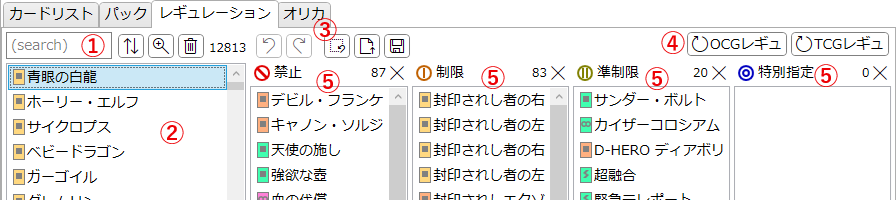
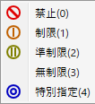

「レギュレーション」タブ
リミットレギュレーション(デッキに入れることのできるカード枚数の規定)を確認/編集するためのタブです。
レギュレーションの内容は編集可能となっています。アプリの初回起動時点では空白なため、適宜設定してください。
このタブで設定した内容はアプリ設定に記憶され、次回以降の起動時に復元されます。
説明

-
サーチバー
-
テキストボックスに入力してEnterを押すとテキスト検索を適用します。
詳しくは検索ウィンドウ/文字列検索を参照してください。 -
 : ソートウィンドウを開きます。
: ソートウィンドウを開きます。
-
 : 検索ウィンドウを開きます。
: 検索ウィンドウを開きます。
-
 : 絞り込みを解除します。
: 絞り込みを解除します。
- サーチバーの右端には、現在そのリストに表示されている項目の数が表示されます。
- ソート及び検索の状態は「カードリスト」タブのリストと共有されます。
-
テキストボックスに入力してEnterを押すとテキスト検索を適用します。
-
カードリスト
- カード名が羅列されています。
- Ctrlキーを押しながら項目をクリックすると複数選択を行います。
- Shiftキーを押しながら項目をクリックすると範囲選択を行います。
- Altキーを押しながら項目をクリックすると、山括弧《》で囲ったカード名がクリップボードにコピーされます。
-
項目の上で右クリックするとメニューが表示され、そのカードの制限指定を変更できます。

- 項目をドラッグ&ドロップで他のリストへ運ぶことでも制限指定を変更できます。
- 大量のカード(概ね1000枚以上)を一度に移動すると数秒フリーズすることがあります。
-
エディットバー
- レギュレーション内容の編集に関する操作を行うボタン群です。
-
 : 最後に行った操作(制限指定の変更)を元に戻します。
: 最後に行った操作(制限指定の変更)を元に戻します。
-
 : 最後に元に戻した編集操作をやり直します。
: 最後に元に戻した編集操作をやり直します。
- 元に戻す以外の操作を一度でも行うとやり直しはできなくなります。
-
 : 全ての制限指定を解除し、各制限指定リストを空にします。
: 全ての制限指定を解除し、各制限指定リストを空にします。
-
 : .jsonファイルを読み込んで、その内容を反映します。
: .jsonファイルを読み込んで、その内容を反映します。
-
 : このレギュレーション設定を.jsonファイルとして保存します。
: このレギュレーション設定を.jsonファイルとして保存します。
-
ロードボタン
- 「OCGレギュ」ボタンを押すと、OCG(日本語版)公式データベースで公開されているリミットレギュレーションを読み込んで反映します。
- 「TCGレギュ」ボタンを押すと、TCG(英語語版)公式データベースで公開されているリミットレギュレーションを読み込んで反映します。
-
制限指定カードリスト
- リミットレギュレーション(採用可能枚数)ごとの、適用されたカードの一覧です。
- 基本的な操作は②のリストと同じです。
- 項目の選択状態は②のカードリストと同期します。
- 各リストの右上には、現在そのリストに含まれる項目数が表示されます。
-
各リスト右上の
 を押すと、そのリストの内容をクリア(全削除)します。
を押すと、そのリストの内容をクリア(全削除)します。
-
「特別指定」は主に以下のような特殊レギュレーション用途を想定しています。
- デッキに採用しなければならないカードを指定する。
- デッキに採用できないカード(禁止カード)を追加するのではなく、採用できるカード(いわば許可カード)を指定する。